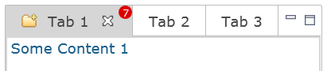

JavaScriptLoader service,
but we had no service to load CSS files.
So we've introduced a new service interface named ClientFileLoader that can load
both, JS and CSS files.
The service provides two methods, requireJs and requireCss, that both
accept a URL to load.
The ClientFileLoader ensures that every file is loaded only once per session, so you can safely
use it in the constructor of a custom widget.
ClientFileLoader loader = RWT.getClient().getService( ClientFileLoader.class );
loader.requireJs( JS_URL );
loader.requireCss( CSS_URL );
This new service replaces the existing JavaScriptLoader service, which has been
deprecated.
The CTabItem widget now supports badges:
Those badges can be set using a data key:
ctabItem.setData( RWT.BADGE, "7" );
The given string is displayed at the top-right of the item. To adjust the look of badges, the Widget-Badge element can be used. It currently supports the properties font, color, background-color, border and border-radius.
The implementation of method Control#redraw(int, int, int, int, boolean) has been
improved. Now, only the provided rectangle is redrawn on the client without clearing rest of the
drawing area.